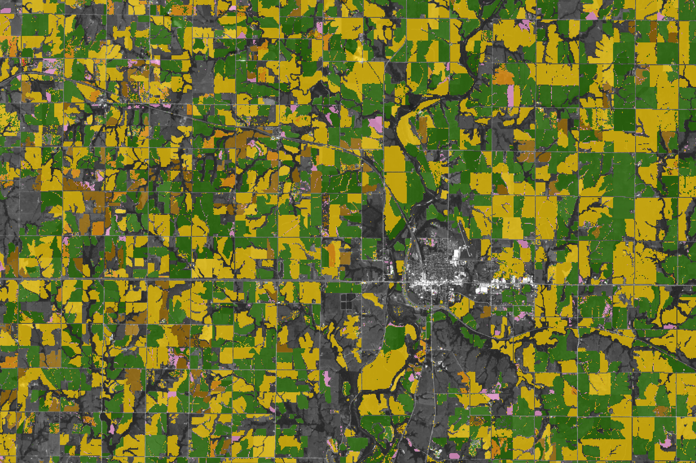

How to Rotate Crops
A perennial question facing America’s 3.4 million farmers is how to handle crop rotation. Farmers planning their growing seasons must decide: is rotating crops worth the extra effort? Which crops perform best in rotation, and in what order? Do local weather conditions make a difference?
New research supported by NASA’s Harvest program offers answers that could help farmers increase yields. Rather than studying a few fields in controlled conditions, researchers used satellite observations and machine learning to analyze rotation effects on a large scale across multiple countries. The study was led by researchers from MIT and Stanford University, using data primarily collected by the Landsat program.
Their findings for fields in the U.S. aligned with common wisdom and practice among farmers. “The bottom line was that rotation had a positive effect on yields,” said Dan Kluger, a postdoctoral fellow at MIT and the study’s lead author. Rotation benefits farmers by reducing pest and weed pressure, maintaining healthy soil microbial communities, and retaining soil fertility with less fertilizer.
However, researchers found nuances based on weather conditions and the sequence of crop rotations. Fields that grew corn then soybeans, or soybeans then spring wheat, saw significant yield increases (about 8 percent) compared to continuous monoculture. Growing soybeans or winter wheat before corn produced more modest gains (2.5 percent and 0.9 percent, respectively), while fields rotated from soybeans to winter wheat saw a decrease of about 12 percent.
Maps based on the Cropland Data Layer illustrate an example in northeast Kansas near Marysville. The 2018 map (left) shows crops before rotation, and the 2019 map (right) shows the following year’s rotation. Many fields alternated between corn (yellow) and soybeans (green), with some winter wheat (brown) and other crops included.
“This part of Kansas is interesting because we see rotation helping yields in some cases and hurting in others,” said Kluger. The lower performance of winter wheat after soy is likely due to delayed planting; soybeans are harvested late, causing winter wheat to be planted weeks later, limiting growth. Modest gains for corn after soybeans (2.5 percent) were likely related to reduced fertilizer use, since legumes like soybeans naturally fix nitrogen.
Researchers also investigated how temperature and precipitation influence rotation effectiveness. Rotation generally improved yields more in rainier conditions for corn, soybeans, and wheat, likely because rainy conditions intensify pest and weed pressure, which rotation mitigates.
Residue from different crops also affects soil moisture. Wheat residue retains snow more effectively than sunflowers or soybeans, meaning rotations with sunflower and soybean are less beneficial in dry environments, where wheat monoculture may perform better.
For soybean yields, crop rotation benefits were greater in warm conditions, likely due to increased pest pressure. However, growing soybeans before corn or wheat in warm weather produced smaller gains, because soy fixes less nitrogen in heat and corn/wheat monocultures are less nitrogen-limited under these conditions.
Kluger recommends consulting local experts to understand what works best in specific areas. “But we hope these results are broadly useful and can help people make decisions about what to grow.” A key strength of this research is that it reflects real-world conditions rather than controlled experimental farms, accounting for economic, cultural, and practical factors.
Most U.S. farmers rotate crops. However, according to the USDA Economic Research Service, about 18 percent of corn, 14 percent of wheat, and 6 percent of soybeans are grown continuously.